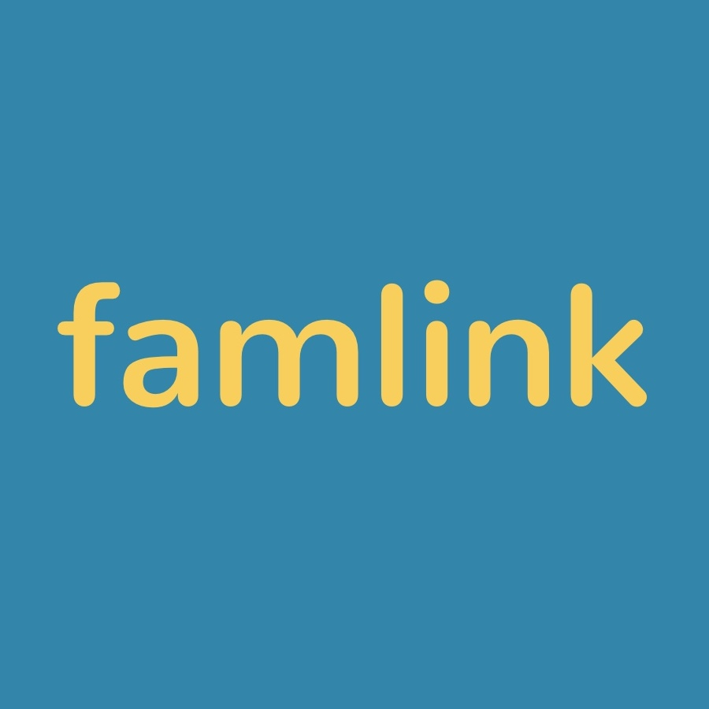
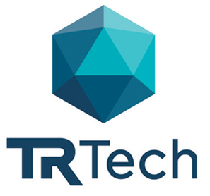

I spend my time understanding concepts to the point that they are elementary lego blocks. I discover new lego blocks using scientific method. Then I use these lego blocks to build something incredible that solves real problems.
Projects

Battery Management System
A system that redistributes energy from the stronger cells to the weaker cells in a battery pack in order to maximize the capacity available to the load at its operating voltage.

Plasma Speaker
A loudspeaker which varies air pressure via a high-energy electrical plasma. Just plug in your phone, turn on some good tunes and voila! Music!

Hamster Home
Hamster Home tracks the wellbeing of your hamster. It monitors water levels, tracks the distance the hamster has ran and allows you to feed the hamster from the website. This project was a 2016 Hack the North winner!
Modern Weasley Clock
Based on the Harry Potter Weasley Clock, the hardware and iOS app that lets you know where your family or roommates are, at the locations that matter. This project was a 2017 Hack the North winner!

Modern Weasley Clock V 2.0
An updated version of the Modern Weasley Clock from Hack the North. At a glance, know the location of your family or roommates, only at the locations that matter.

Laser Harp
A musical instrument thats puts a spin on a harp by replacing its strings with lasers. It plays a corresponding note when the user touches one of the laser beams.

PCB Heart
A simple heart PCB that slowly blinks LEDs when turned on. It was a fun project that I made for Michelle :)
Work Experience
HITCH
-
Business
- Pitched to over 100 investors and raised over 400k for HITCH
- HAX Demo Day Pitch
- Pitch winner for Velocity Fund Finals 25k and AC Jumpstart 60k
- Velocity Fund Final Pitch
- Sold to first 10 schools with a 60% close rate
- Developed content strategy and worked with Youtube producers, textbooks publishers, and local teachers to gain access to content
- Developed company’s financial projections for internal use and investors?????? UX
- Interviewed over 50 customers using problem and solution interviews
- Created 3 mockup designs for customer interviews using Sketch and Invision
- Converted 4 schools into paying customers from Invision mockups alone
- Guided HAX design team in creating company branding Tech
- Designed, manufactured, and tested 60 hardware units
- Worked with contracted front-end developer to turn my designs into a product
- Managed HAX engineering team in design a scalable version of the hardware
Famlink
Co-founder | CEO
May 2017 - Oct 2017
Famlink, a startup focused on combining the convenience of location sharing with the levels of privacy you want for various social groups.
- Hack the North 2016 Winner + Received $1000 grant from 1517 VC firm
- Conducted over 100 problem and solution interviews with potential users
- Implemented weekly sprints for user testing using Sketch and Invision
Teledyne Dalsa
CMOS Sensor Developer
May 2016 - December 2016
Teledyne DALSA is a global leader in high performance digital imaging and semiconductor technology, headquartered in Waterloo, ON, Canada.
My responsibilities included:
- Led a project’s defect analysis to improve image sensor yields by providing CMOS delayering reports
- Designed various CMOS circuits using Cadence software
- Experienced with CMOS, as well as CCD-CMOS hybrid sensor architecture design
- Familiar with CMOS Device physics and its application in cameras
TR Tech
Technology Developer
January 2015 - August 2015
TR Tech, an industry-driven, not-for-profit technology commercialization company that fast tracks ICT innovation to market by working with its 80 industry, government, and academic partners and clients to discover, develop and commercialize technology.
My responsibilities included:
- Performed PCB design, CNC fabrication, assembly, and testing
- Created test programs for RF antenna design research
- Developed Android app for interfacing with a RFID reader module
- Designed various projects including wireless node networks, and RFID readers
Involvement
University of Alberta SPIE Club President
The club is about having fun with photonics and optics and building projects. I got interested in the club because I always found the nature of photonics to be so interesting, but in addition to that, it had a focus on members designing their own projects. This led me and a few others to start designing the laser harp. From this, I wanted to continue building cool projects and help others turn their ideas into tangible projects. As President, I was able to grow this aspect of the club and give others the resources and guidance required to build projects of their own.
Hackathon Hardware Mentor
 Hackathons have always been such an amazing experience for me. They are something that I want to share with others. As a hardware mentor for Hack the North in Waterloo, and HackEd in Edmonton, I was able to do just that. Helping others troubleshoot hardware projects was so much fun and I am glad that I was able to give back!
Hackathons have always been such an amazing experience for me. They are something that I want to share with others. As a hardware mentor for Hack the North in Waterloo, and HackEd in Edmonton, I was able to do just that. Helping others troubleshoot hardware projects was so much fun and I am glad that I was able to give back!